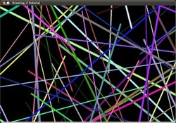

Random generator and text with OpenCV
Goals
In this tutorial you will learn how to:
- Use the Random Number generator class (cv::RNG) and how to get a random number from a uniform distribution.
- Display text on an OpenCV window by using the function cv::putText
Code
- In the previous tutorial (Basic Drawing) we drew diverse geometric figures, giving as input parameters such as coordinates (in the form of cv::Point), color, thickness, etc. You might have noticed that we gave specific values for these arguments.
- In this tutorial, we intend to use random values for the drawing parameters. Also, we intend to populate our image with a big number of geometric figures. Since we will be initializing them in a random fashion, this process will be automatic and made by using loops.
- This code is in your OpenCV sample folder. Otherwise you can grab it from here
Explanation
Let’s start by checking out the main function. We observe that first thing we do is creating a Random Number Generator object (RNG):
RNG rng( 0xFFFFFFFF );
RNG implements a random number generator. In this example, rng is a RNG element initialized with the value 0xFFFFFFFF
Then we create a matrix initialized to zeros (which means that it will appear as black), specifying its height, width and its type:
Mat image = Mat::zeros( window_height, window_width, CV_8UC3 ); imshow( window_name, image );
Then we proceed to draw crazy stuff. After taking a look at the code, you can see that it is mainly divided in 8 sections, defined as functions:
c = Drawing_Random_Lines(image, window_name, rng); if( c != 0 ) return 0; c = Drawing_Random_Rectangles(image, window_name, rng); if( c != 0 ) return 0; c = Drawing_Random_Ellipses( image, window_name, rng ); if( c != 0 ) return 0; c = Drawing_Random_Polylines( image, window_name, rng ); if( c != 0 ) return 0; c = Drawing_Random_Filled_Polygons( image, window_name, rng ); if( c != 0 ) return 0; c = Drawing_Random_Circles( image, window_name, rng ); if( c != 0 ) return 0; c = Displaying_Random_Text( image, window_name, rng ); if( c != 0 ) return 0; c = Displaying_Big_End( image, window_name, rng );
All of these functions follow the same pattern, so we will analyze only a couple of them, since the same explanation applies for all.
Checking out the function Drawing_Random_Lines :
int Drawing_Random_Lines( Mat image, char* window_name, RNG rng ) { int lineType = 8; Point pt1, pt2; for( int i = 0; i < NUMBER; i++ ) { pt1.x = rng.uniform( x_1, x_2 ); pt1.y = rng.uniform( y_1, y_2 ); pt2.x = rng.uniform( x_1, x_2 ); pt2.y = rng.uniform( y_1, y_2 ); line( image, pt1, pt2, randomColor(rng), rng.uniform(1, 10), 8 ); imshow( window_name, image ); if( waitKey( DELAY ) >= 0 ) { return -1; } } return 0; }
We can observe the following:
The for loop will repeat NUMBER times. Since the function cv::line is inside this loop, that means that NUMBER lines will be generated.
The line extremes are given by pt1 and pt2. For pt1 we can see that:
pt1.x = rng.uniform( x_1, x_2 ); pt1.y = rng.uniform( y_1, y_2 );
We know that rng is a Random number generator object. In the code above we are calling rng.uniform(a,b). This generates a randomly uniformed distribution between the values a and b (inclusive in a, exclusive in b).
From the explanation above, we deduce that the extremes pt1 and pt2 will be random values, so the lines positions will be quite impredictable, giving a nice visual effect (check out the Result section below).
As another observation, we notice that in the cv::line arguments, for the color input we enter:
randomColor(rng)
Let’s check the function implementation:
static Scalar randomColor( RNG& rng ) { int icolor = (unsigned) rng; return Scalar( icolor&255, (icolor>>8)&255, (icolor>>16)&255 ); }
As we can see, the return value is an Scalar with 3 randomly initialized values, which are used as the R, G and B parameters for the line color. Hence, the color of the lines will be random too!
The explanation above applies for the other functions generating circles, ellipses, polygons, etc. The parameters such as center and vertices are also generated randomly.
Before finishing, we also should take a look at the functions Display_Random_Text and Displaying_Big_End, since they both have a few interesting features:
Display_Random_Text:
int Displaying_Random_Text( Mat image, char* window_name, RNG rng ) { int lineType = 8; for ( int i = 1; i < NUMBER; i++ ) { Point org; org.x = rng.uniform(x_1, x_2); org.y = rng.uniform(y_1, y_2); putText( image, "Testing text rendering", org, rng.uniform(0,8), rng.uniform(0,100)*0.05+0.1, randomColor(rng), rng.uniform(1, 10), lineType); imshow( window_name, image ); if( waitKey(DELAY) >= 0 ) { return -1; } } return 0; }
Everything looks familiar but the expression:
putText( image, "Testing text rendering", org, rng.uniform(0,8), rng.uniform(0,100)*0.05+0.1, randomColor(rng), rng.uniform(1, 10), lineType);
So, what does the function cv::putText do? In our example:
- Draws the text **”Testing text rendering”** in image
- The bottom-left corner of the text will be located in the Point org
- The font type is a random integer value in the range: \([0, 8>\).
- The scale of the font is denoted by the expression rng.uniform(0, 100)x0.05 + 0.1 (meaning its range is: \([0.1, 5.1>\))
- The text color is random (denoted by randomColor(rng))
- The text thickness ranges between 1 and 10, as specified by rng.uniform(1,10)
As a result, we will get (analagously to the other drawing functions) NUMBER texts over our image, in random locations.
Displaying_Big_End
int Displaying_Big_End( Mat image, char* window_name, RNG rng ) { Size textsize = getTextSize("OpenCV forever!", FONT_HERSHEY_COMPLEX, 3, 5, 0); Point org((window_width - textsize.width)/2, (window_height - textsize.height)/2); int lineType = 8; Mat image2; for( int i = 0; i < 255; i += 2 ) { image2 = image - Scalar::all(i); putText( image2, "OpenCV forever!", org, FONT_HERSHEY_COMPLEX, 3, Scalar(i, i, 255), 5, lineType ); imshow( window_name, image2 ); if( waitKey(DELAY) >= 0 ) { return -1; } } return 0; }
Besides the function getTextSize (which gets the size of the argument text), the new operation we can observe is inside the foor loop:
image2 = image - Scalar::all(i)
So, image2 is the substraction of image and Scalar::all(i). In fact, what happens here is that every pixel of image2 will be the result of substracting every pixel of image minus the value of i (remember that for each pixel we are considering three values such as R, G and B, so each of them will be affected)
Also remember that the substraction operation always performs internally a saturate operation, which means that the result obtained will always be inside the allowed range (no negative and between 0 and 255 for our example).
Result
As you just saw in the Code section, the program will sequentially execute diverse drawing functions, which will produce:
First a random set of NUMBER lines will appear on screen such as it can be seen in this screenshot:
Then, a new set of figures, these time rectangles will follow.
Now some ellipses will appear, each of them with random position, size, thickness and arc length:
Now, polylines with 03 segments will appear on screen, again in random configurations.

Filled polygons (in this example triangles) will follow.
The last geometric figure to appear: circles!

Near the end, the text *”Testing Text Rendering”* will appear in a variety of fonts, sizes, colors and positions.
And the big end (which by the way expresses a big truth too):